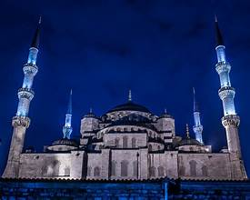
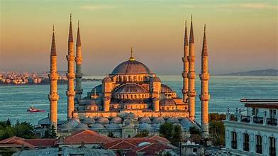
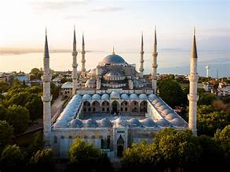

History
The Blue Mosque (Sultan Ahmed Mosque) was built in the early 17th century during the reign of Sultan Ahmed I. It stands in the historic Sultanahmet district, directly across from Hagia Sophia, and remains one of Istanbul’s most iconic landmarks.
The mosque is especially famous for its interior decorated with thousands of handmade Iznik tiles, many of them in shades of blue, which gave it the nickname “Blue Mosque.” Its courtyards, domes, and elegant calligraphy make it a masterpiece of classical Ottoman architecture.
Photo Gallery


